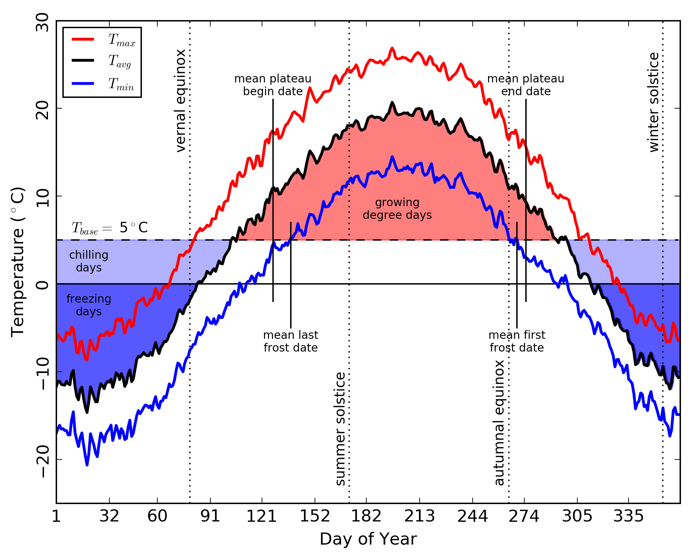

WxCD
Weather and Climate Derivatives
mapped from daily surface observations
Author: Matthew Garcia
PI: Prof. Philip A. Townsend
Ref: Garcia and Townsend (2016, in press)

Documentation
Related Projects
Introduction
WxCD is a collection of python scripts and workflows for managing and summarizing surface weather (Wx) observations over climatological time scales, typically 30 years or more. Basic meteorological station reports of temperature and precipitation are interpolated to a user- defined grid, then used to calculate regional and climatological statistics and a number of derived climatological measures focusing on the cold and warm (growing) seasons. Results are intended for use with in situ and remote sensing observations of vegetation phenology. This project is part of ongoing work for the author's Ph.D. dissertation.